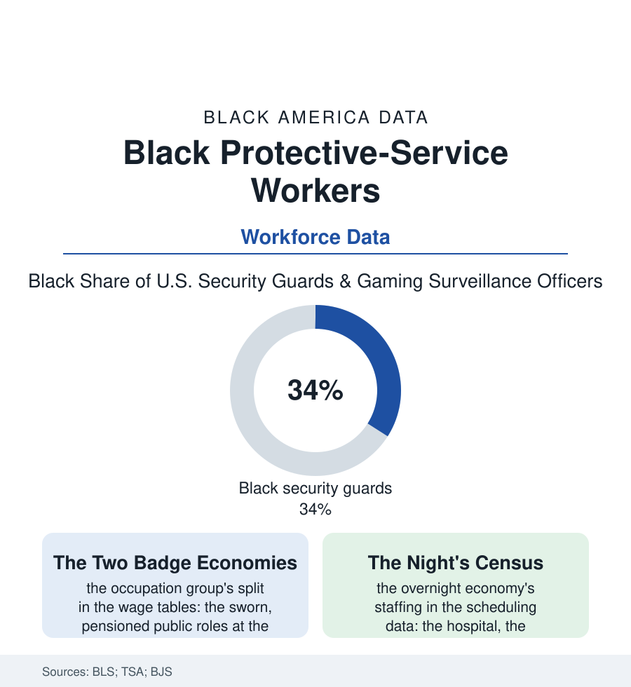

Black Employment
The Watch: Black Workers in Protective Services
Security guards, corrections-adjacent staff, bailiffs, and screeners: protective services employ Black workers at among the highest rates of any occupation group — at its widest internal divide. The watch file.

Walk any American institution after hours and you meet this workforce: the guard at the hospital door, the screener at the airport, the bailiff at the courtroom, the officer in the tower lobby. Protective services — the BLS's great category of the watch — employ Black workers at roughly a third of their ranks in several of its largest occupations, among the highest concentrations in the employment file. This article reads the watch file.
One Category, Two Economies
The category's internal divide is its data story: at one end, the sworn and public tier — the court officers and bailiffs, the transit and campus officers of the agencies, the federal screeners of the TSA (a workforce created in a single federal hiring of the post-2001 years, its Black share among the federal government's highest, the airport checkpoint as the era's emblematic Black public workplace) — jobs with the public-sector bargain intact (the pension, the union, the ladder into supervision and the agencies beyond); at the other, the contract guard industry — the private security firms of the business file's janitorial-and-security shelf, guarding the warehouses, the hospitals, and the retail of the entire atlas at wages the BLS tables place near the service economy's floor, with the turnover (triple digits annually at the industry's low end in the trade data) and the benefits of a workforce treated as interchangeable in a job whose whole substance is trust. The middle tiers complete the census: the corrections workforce (counted here strictly as employment — the detention and correctional-facility staffs of the county and state systems, a major Black employer in the rural counties of the corrections file's geography, its officers' unions and pensions the small towns' public bargain), the private investigators and gaming-surveillance officers of the casino rows, the armored-car and event-security crews. The exposure rows run across all tiers without respecting them: the night's dangers in the incident data (the guard's occupational fatality and assault rates among the service occupations' highest in the BLS census of fatal injuries — the unarmed watch confronting the armed public at the convenience store and the hospital door), the health file of the night shift itself (the sleep and metabolic literature's shift-work rows, borne by the workforce that keeps the 24-hour economy's peace). The licensing patchwork beneath both tiers is the trade file's own scandal in the regulatory data: the guard card's requirements varying from a week's course to a background check and a pulse by state, the armed post's training hours a fraction of the cosmetology license's in the comparisons the reformers never tire of printing.
The Watch's Meaning
The file's significance exceeds its wage tables because protective work is where the state's and the market's trust is physically delegated — and the delegation's demographics carry a history the data state without commentary: a Black workforce hired in vast numbers to guard property and persons in a country whose older files so often cast it as the thing guarded against; the dignity the workers' own accounts insist on (the professionalism of the post, the guard who knows the building's every regular, the screener's practiced courtesy under the traveling public's worst manners) against the occupation's design at its low end (the twelve-hour post, the unpaid relief wait, the uniform charged against the check in the wage-and-hour files). The union drives of the current decade in the contract tier — the security officers' locals posting some of the labor movement's fastest Black membership growth in the organizing data, the airport and hospital campaigns converting the watch's concentration into contracts — are the file's forward tense: the same workforce that the TSA's federalization lifted in one tier, organizing its way up in the other. The census counts the watch at over a million strong in the guard occupations alone. The city sleeps on their shift; the least the data can do is count them awake.
Reading the Protective-Services Data
A third of the nation's watch, split between the pensioned post and the twelve-dollar post: the protective-services file is the employment section's trust economy made visible — who is hired to be believed at the door. Its improvement runs through the contract tier's wages and the organizing data's trend lines, both published, both moving, neither finished.
More in Black Employment
The Black Unemployment Rate: The Two-to-One Pattern
Black unemployment runs at roughly twice the White rate — 5.5 percent against 3.3 percent in annual averages — a ratio stable across five decades of federal data. How it is measured and why it persists.
Black Median Weekly Earnings: The 80-Cent Ratio
Black full-time workers earn a median of about $900 a week — roughly 80 cents for every dollar White workers earn. The BLS earnings data by group, gender, and occupation.
Black Labor Force Participation: Working at National Rates
Black labor force participation runs at roughly the national rate — and Black women participate at higher rates than White women. The BLS participation data.
Source: U.S. Bureau of Labor Statistics occupational data; U.S. Census Bureau; Transportation Security Administration workforce data; Bureau of Justice Statistics.